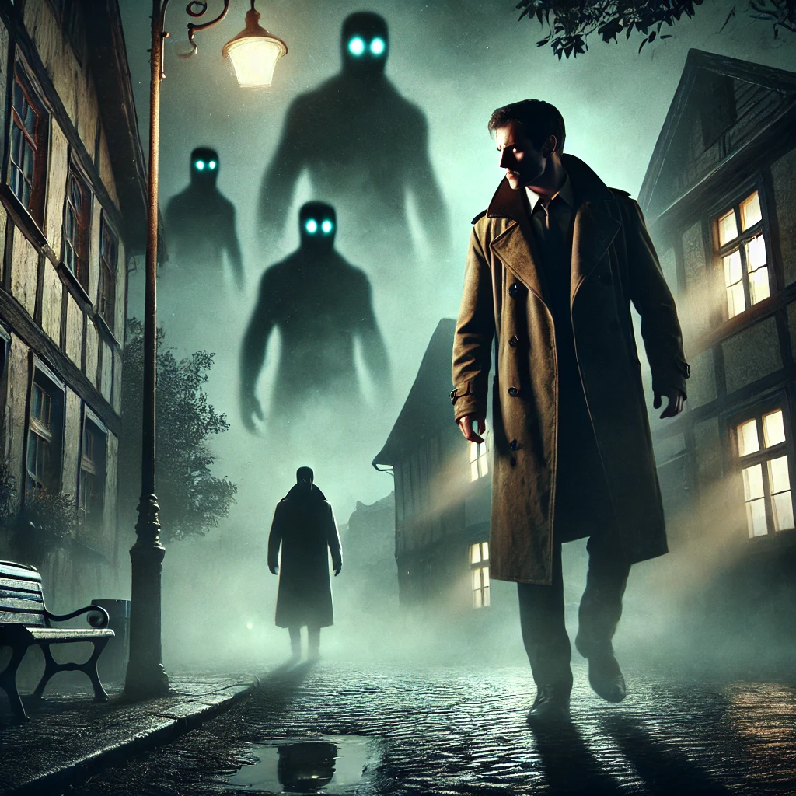

돌이킬 수 있는
목차
작가
문목화
출판일
2018년
감상평에 대한 AI그림
이 책은 비리경찰이 세상으로부터 지워진 마을에 가서 그곳에 몰래 사는 초능력자들을 만나면서 벌어지는 이야기이다. 이 이야기 속에서 사랑은 분명히 존재하지만, 사랑에 관한 어떠한 언급이 존재하지 않았는데 오히려 그게 더 사랑처럼 느껴졌다. 반전에 반전을 거듭하기 때문에 책을 읽는 내내 책 속으로 더 깊게 빠져들어 그 세계 속에 갇힌 것만 같은 기분을 느꼈다.

감상평에 대한 AI평가
~~~~AI평가~~~~~
✨이 책은 비리 경찰이 세상에서 사라지는 마을에 있고, 모두 숨은 초능력자들과 엇히며 일하는 이야기를 다뤄줍니다. 빼고는 반전과 긴장감이 넘치는 속삭임은 마치 그 마을에 있는 듯한 기분이 들게 합니다.
특히, 사랑이 분명 존재하지만 오직 한 가지라도 언급할 수 있는 존재입니다. 그러나 중요한 인물들의 행동과 선택을 통해 그 감정이 더욱 더 넓어지고, 사랑이란 무엇인지 다시 생각하게 됩니다..
✨ ~~~~AI평가~~~~~
✨ ~~~~AI평가~~~~~